Behind every champion is a system that works.
We build the ecosystem around India's athletes — coaches, academies, sports science, and policy — so talent turns into consistent, global-level performance.
- Athlete
- Coaches & family
- Academies & systems
- Policy & partners
Seven ways to move with us
Whichever lane you're running in, there's a place for you in GoSports' ecosystem.
A catalyst for a sporting nation.
From early mornings to defining moments, every athlete's journey is shaped by effort, setbacks, and resilience. While the world sees results, we see everything behind them — the coaches, families, and community that make performance possible. Championing excellence is what drives us, every day.

Delivering impact through five strategic pillars
We partner with federations, government, corporations, foundations, and individuals whose desire for change enables us to design programmes that help athletes, academies, coaches, and ecosystem stakeholders reach their full potential.
Athletes
Funding, sports science, nutrition, mentorship, and competition exposure.
Academies
Infrastructure, performance systems, and coach capacity building.
Communities
Grassroots participation and physical literacy programmes.
Governments
Policy co-development, research, and strategic advisory.
With 18 years of experience across elite sport, academies, and legal and policy frameworks, we build programmes that convert investment into sustained, measurable impact.
Research, then policy, then delivery — in that order
We don't start with programmes. We start by researching what's actually broken, then work with government and partners to fix the policy, then build the on-ground programme to deliver it. That sequence is what makes the results durable.
Research & the SAPA Stack
A seven-layer framework — spanning governance, innovation, capacity, and policy — that treats sport and physical activity as one connected system, not isolated programmes. Producing India-centric data, toolkits, and indices.
The Academy Development Model
Our framework for strengthening academies from the ground up: athlete pathways, coaching and technology, infrastructure and sports science, and governance — built alongside the academy, not imposed on it.
A transparent selection process
A 9-step, multi-stage process — from outreach through expert review to due diligence — used to select every athlete and academy we support.
Championing excellence in Indian sport
India's sporting potential remains largely untapped — sport contributes just 0.1% of GDP. GoSports Foundation addresses this through a data-driven model delivering 50,000+ interventions every year, across 25 states and 33 sports.
Hear from our athletes and changemakers
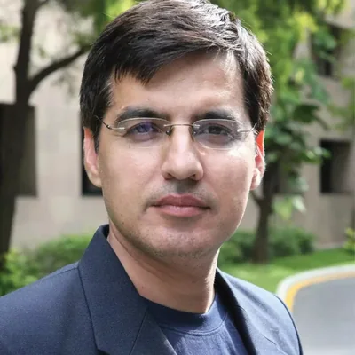
"Infosys Foundation and GoSports Foundation share a joint passion for strengthening the sports ecosystem in India — nurturing exceptional youngsters through an integrated programme that fosters excellence at the academy, coach, and athlete levels."Sumit VirmaniGlobal Chief Marketing Officer, Infosys; Trustee, Infosys Foundation
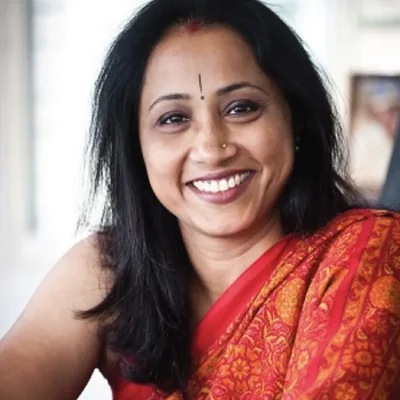
"Through this partnership, we've brought access to technology, structured support, and performance insights that weren't available to us growing up. It's not just athletes, but coaches and the larger ecosystem that benefit."Ashwini NachappaFounder, Ashwini Sports Foundation
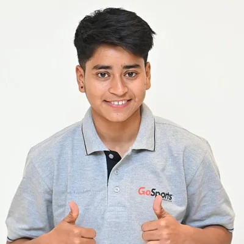
"After the World Cup, I suffered a shoulder injury and was sent for treatment and recovery. Alongside rehabilitation, I continued training and improved my batting, fitness, and strength. Thanks to their support, I recovered fully and grew stronger as a cricketer."Falak NazIndian Cricketer, Equal Hue Cricket Excellence Programme
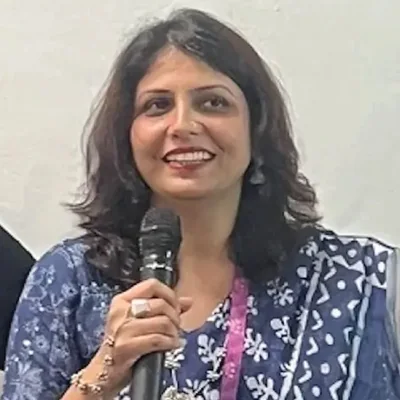
"The room was filled with lived experiences, challenges, and practical solutions shaped by the athletes themselves. Initiatives like these play a critical role in enabling athletes to understand their rights and advocate for themselves with confidence."Shruti PushkarnaFounder & CEO, Karuneti Consulting
Backed by partners who ask for outcomes, not just logos
Every programme runs because a corporate partner, foundation, federation, or government body funded it — and holds us accountable for what it achieves.
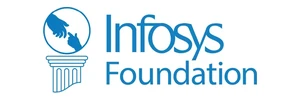
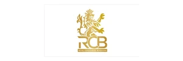
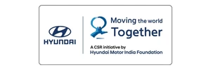
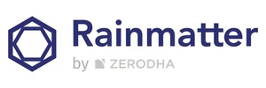
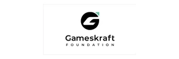
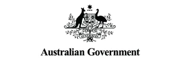
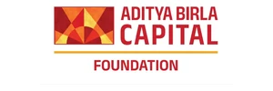
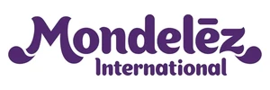
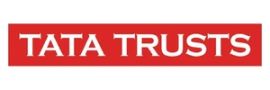
Corporate CSR
Infosys Foundation, IndusInd Bank, and Aditya Birla Group each fund a named, tracked programme.
Federations & government
BCCI, the International Shooting Sport Federation, and the Government of India, through policy and commissioned work.
Where the ecosystem is headed
18 years in, this is where we're pointed next — new hubs, new research, and a wider circle of people who've been part of the journey.
The Performance Institute
An Axis Bank x GoSports Foundation initiative — a hub for sports science, athlete testing, and applied research at CSE, Bengaluru.
Learn more →SAPA Centre
A dedicated hub for our research and policy work, launching as its own site and linking back here.
Thought Leadership
A home for our monthly newsletter and feature pieces from leadership on the future of Indian sport.
Alumni Network
Reconnecting with past programmes, projects, and the athletes who came through them.
Achievements & honours
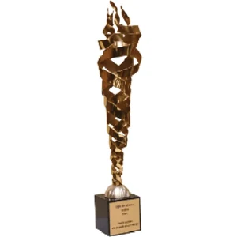
Rashtriya Khel Protsahan Puruskar2019Government of India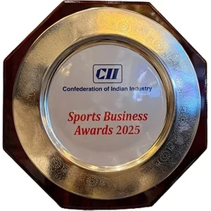
CII Sports Business Awards2025Best Organisation Supporting Para Sports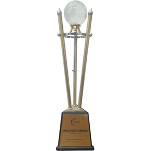
FICCI — Indian Sports Award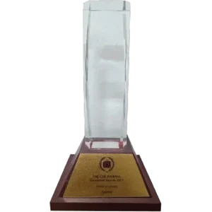
CSR Journal Excellence Award2017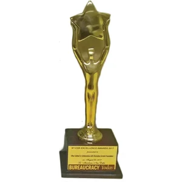
BT-CSR Excellence Awards2017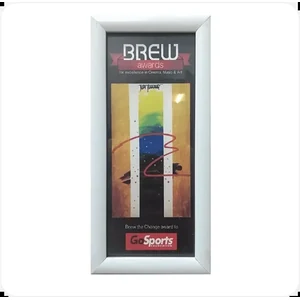
Brew Awards2015Help build the system, not just support it.
Join a mission-driven team strengthening India's sporting ecosystem through research, innovation, and high-performance programmes.
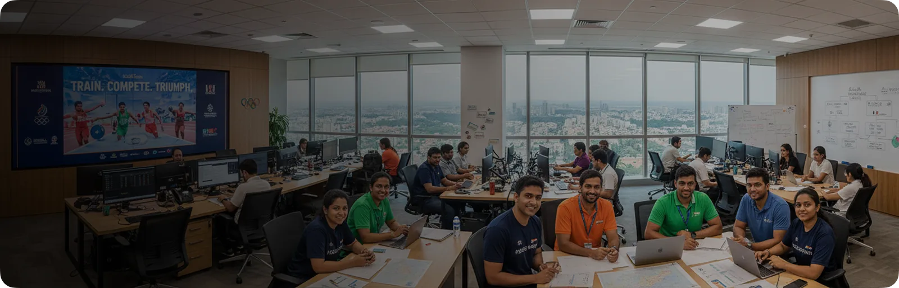